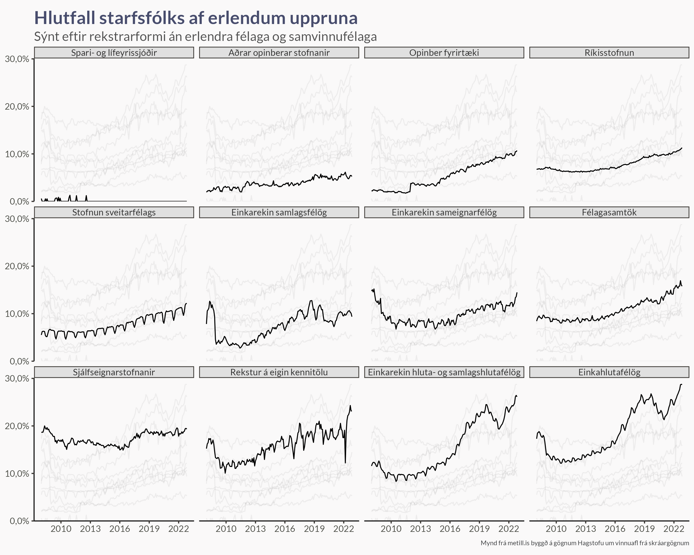

Árstíðaleiðrétt hlutfall opinbers starfsfólks

Við getum hugsað að þetta séu tvö ferli:
- Langtímaferli sem breytist án mjög ákveðins mynsturs
- Árstíðabundnar sveiflur sem eru að mestu leyti svipaðar frá ári til árs
Notum GAM (Generalized Additive Models) til að meta bæði ferlin saman. Splæsibrúunin (e. splines) metur ferlið í tveimur hlutum, línulegum og ólínulegum, og notar stika til að toga ólínulega hlutann í átt að línulegu ferli.
Þar sem hæga þróunin getur verið að breytast mishratt á mismunandi árabilum notum við aðlögunarsplæsibrúun (e. adaptive smoother) þar sem ólínulegi stikinn fær að breytast með tíma. Í kóðanum er þetta táknað með
s(timi, bs = "ad")Árstíðarferlið hefur þær skorður að frávikið í upphafi og byrjun ársins á að stefna í sömu tölu, þ.e. \(\text{31. desember} \approx \text{1. janúar}\). Pakkinn
mgcvbýður upp á slíka hringrásarsplæsara (e. cyclic smooths) [alveg í ruglinu með íslenskuna núna]. Í kóðanum er þetta táknað meðs(manudur, bs = "cc")
Þegar við erum komin með mat á þessi tvö ferli er lítið mál að heilda yfir árstíðarbundnu sveiflurnar. Við vigtum árstíðarbundna matið eftir nákvæmni matsins í hverjum mánuði (einum deilt með staðalvillu matsins) og reiknum svo meðaltal eftir því.
Allt í allt metum við þá líkanið svona (einfölduð útgáfa af kóða):
gam(Opinbert ~ s(manudur, bs = "cc") + s(timi, bs = "ad"), offset = log(Heild), family = nb())
Fjöldi opinbers starfsfólks er jákvæð fjöldatala svo fyrsta ágískunin er alltaf neikvæða tvíkostadreifingin. Við metum líkanið á lograkvarða, bæði því það er náttúrulega matið fyrir dreifinguna, en líka því við búumst við því að útkoman breytist hlutfallslega milli ára.
Hér fyrir neðan sjáum við svo matið á árstíðaráhrifum:

Hlutall (p) opinbers starfsfólks (O) af heildarfjölda starfsfólks (H) má skrifa
\[ p = \frac{O}{H}, \]
Þar sem \(H\) inniheldur líka starfsfólk á almennum vinnumarkaði (A), s.s. \(H = O + A\).
Skoðum hlutfallið á tveimur mismunandi tímapunktum, \(p_1\) og \(p_2\).
\[ \frac{p_2}{p_1} = \frac{O_2/H_2}{O_1/H_1} = \frac{O_2/O_1}{H_2/H_1}. \]
Ef \(p_2 > p_1\) og \(p_1 \neq 0\) gildir að \(p_2/p_1 > 1\) og því
\[ \begin{aligned} \frac{O_2/O_1}{H_2/H_1} &> 1 \\ \rightarrow \frac{O_2}{O_1} &> \frac{H_2}{H_1}, \end{aligned} \]
þ.e. fjöldi opinbers starfsfólks hefur vaxið hlutfallslega hraðar en fjöldi starfsfólks alls.
Þetta er kannski augljóst, en það er gott að hafa þetta í huga þegar hlutfallið hækkar og athuga hvort það sé vegna mikilla opinberra ráðninga eða fækkunar starfa á almennum vinnumarkaði.
Hér nota ég GAM til að smootha gögnin og nota svo árstíðaleiðrétt smooth gögn til að reikna stöðugar mánaðarlegar breytingar og teiknum þær svo.


